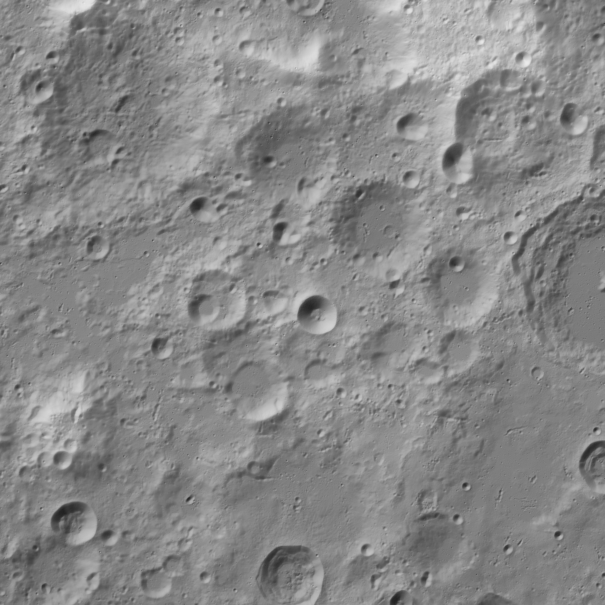

01 / Analysis inputs
EDITABLE02 / Site selection
2D · SOUTH POLE
Click place site · Drag zoom to area · Ctrl + wheel zoom · Middle drag or Space + drag / arrows pan · Right-click menu · Backspace previous view · . place at cursor
Shaded relief: LOLA 80 m, lighting for display only · Labels: approximate positions
SELECTED EPOCH · UTC—
VISIBILITY AT EPOCH—
Assessment & visibility
Check each constraint, then inspect the mission timeline.
Constraint assessment
NOT RUNSettings changed. Run again to update.
Window assessment
Run an assessment
Pick a site on the map or enter coordinates, then press Run assessment.
Visibility over the mission window
Exact visibility intervals / UTC
Sun & Earth / terrain geometry
145 samples · 10-minute steps
Solid: body altitude · Dashed: terrain horizon
Sun
Earth
Visibility depends on terrain in the body's direction, not only on the mathematical horizon.
Why the terrain mattersThe Sun can be above the mathematical horizon and still be blocked: clearance = body altitude − terrain horizon in the body's direction. A negative clearance means the body is hidden.
Geometry at selected epoch
| Quantity | Sun | Earth |
|---|
Clearance = body altitude − directional terrain horizon.
Window report
| Quantity | Value | Unit |
|---|
Compare 2–3 sites
ONE WINDOW · ONE MISSION PROFILEFind sites & start dates
5 km GRID · NO COMBINED SCOREAcceptable start dates / site grid
Acceptable start dates0% → 100%5 km spacing · hollow: no acceptable start
Map shares come from hourly sampling of start times; top results are recomputed at 1-minute resolution.